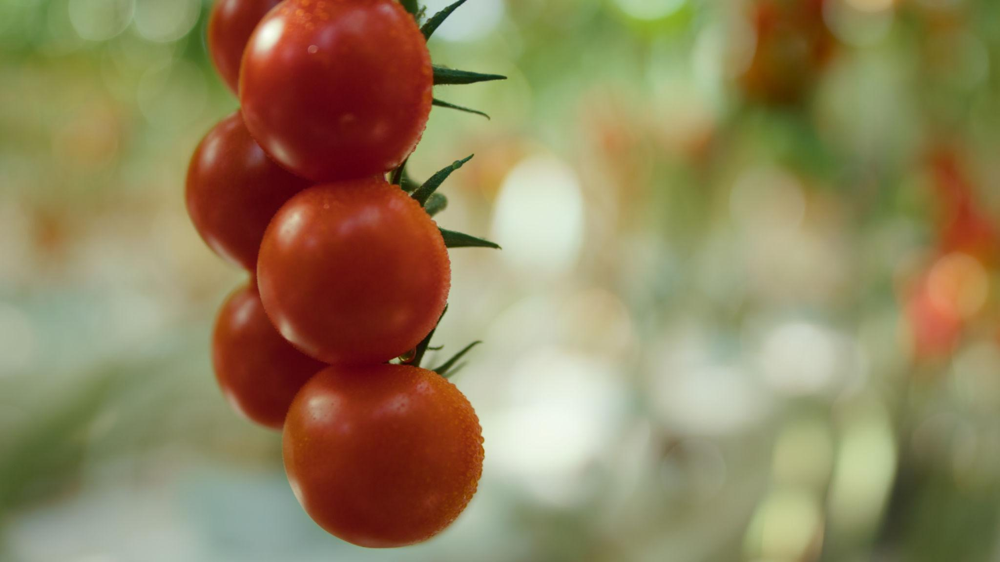

Revolução na Agricultura Familiar
Inovando o Campo.
Inovando o Campo.
Valorizando a Origem.
Conectamos pequenos produtores rurais diretamente ao mercado, eliminando intermediários e garantindo transparência total através da rastreabilidade digital.
O PROBLEMA
Por que o AgroNexus existe?
Hoje, o pequeno produtor rural é invisível. Ele produz com qualidade, mas perde até 60% do seu lucro para intermediários. Além disso, o consumidor final não sabe de onde vem o que come.
Baixa Rentabilidade
Intermediários dominam o preço, deixando pouco para quem realmente produz.

Nossas Soluções
Rastreabilidade
Gere QR Codes únicos para seus lotes e conte a história do seu produto ao consumidor.
Mercado Justo
Elimine intermediários e conecte-se diretamente com compradores que valorizam sua produção.
Gestão Simples
Controle sua produção e vendas de forma intuitiva, direto pelo celular.